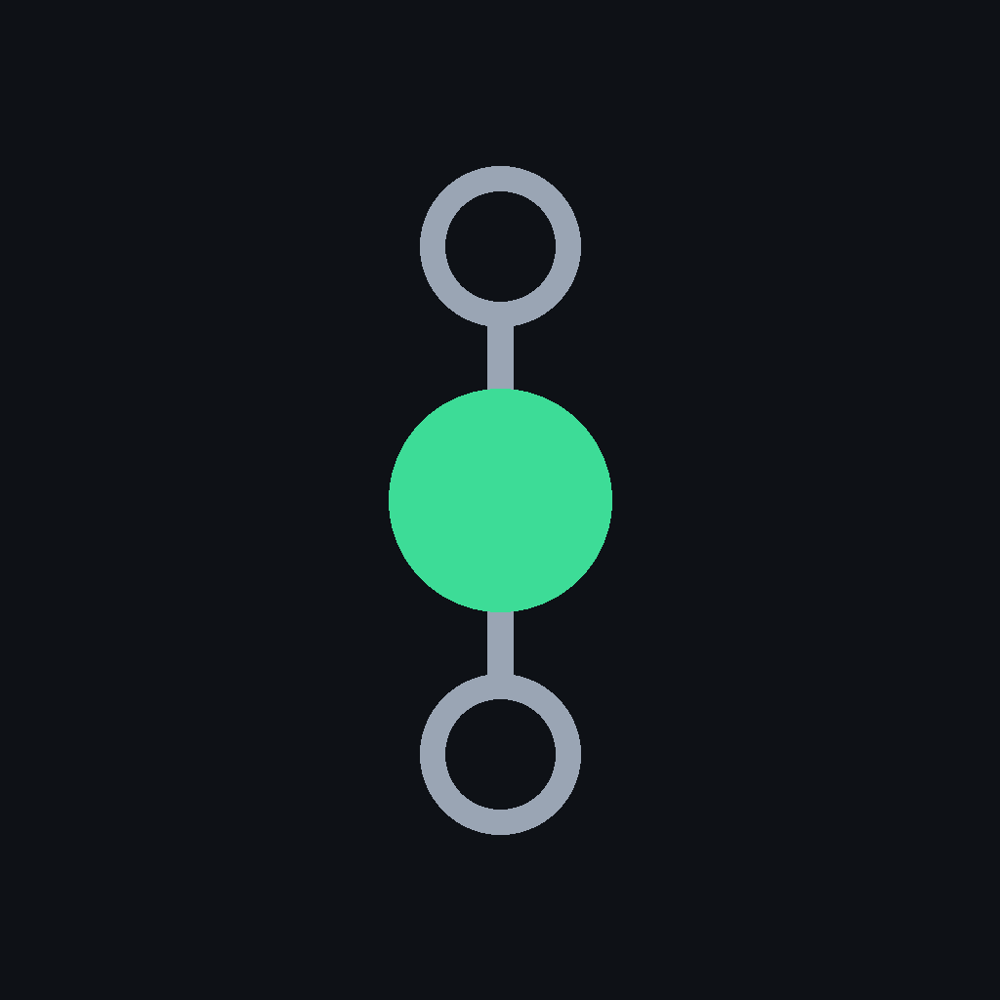
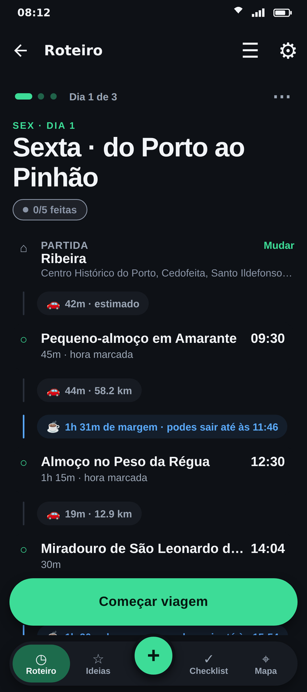
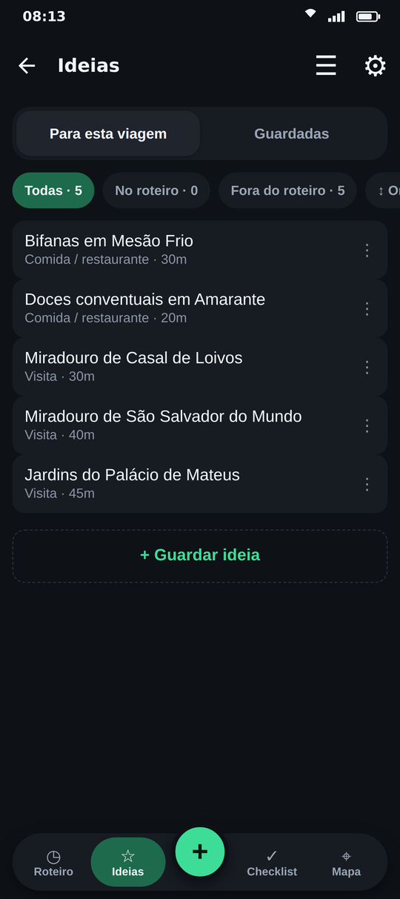
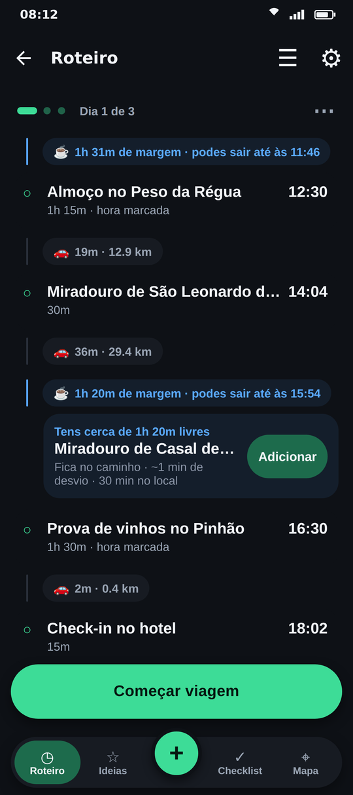
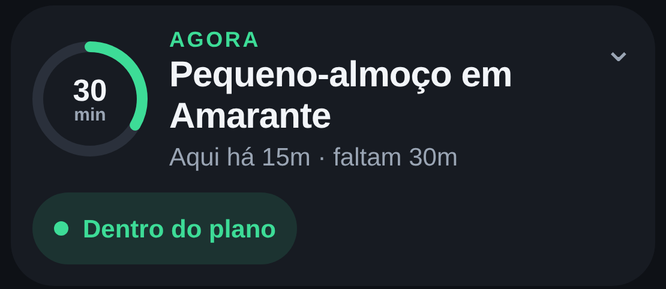
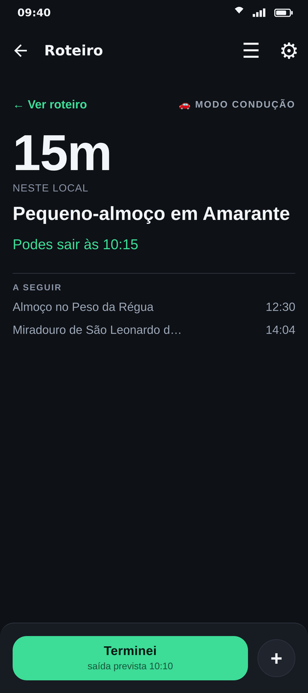
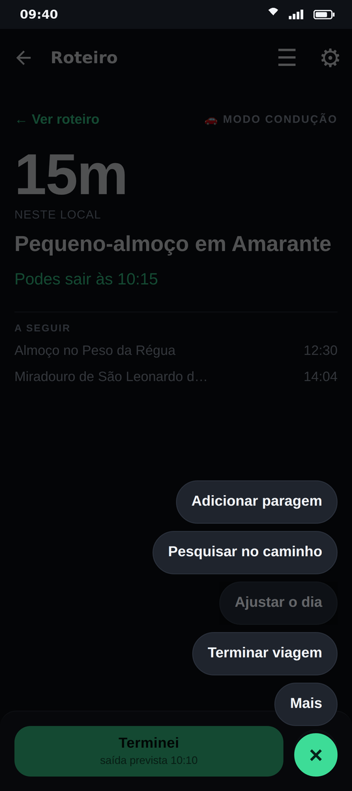
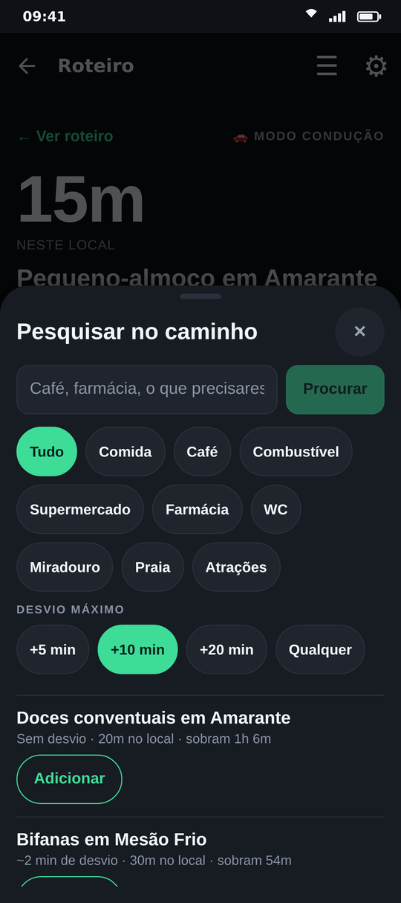
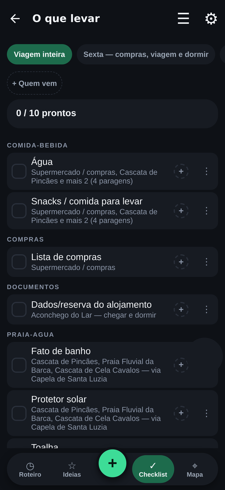

Plan-ish
Planning is only the beginning. Plan-ish stays with your trip all the way to the end.
Build your itinerary day by day. On the road, it shows what comes next, how much time you have and whether the day still fits. For driving, it works with Google Maps: when it is time to move on, one tap starts navigation to your next stop, with no addresses to type. Plan-ish takes care of the rest — the plan for the whole day.
The app is currently available in Portuguese.
Are you a tester? Download the test version here. Google Play →
Ideas and suggestions
Save what catches your eye. Decide later.
Not everything needs a time slot. Keep the places that interest you in Ideas — a viewpoint, a garden, a pastry shop — with no commitment. When you decide, add them to the itinerary on the day and in the spot you choose.
And if the day runs ahead of schedule, Plan-ish suggests one of your ideas that fits the free time and lies along the way, with the detour and the time there already accounted for.


On the road
Always know how the day is going
A card at the top of the itinerary shows where you are in the plan: how long you have been at the stop, how long is left and whether the rest of the day still fits. Mark your arrival with a swipe, or let the app try to detect it, and the times that follow adjust.
Behind the wheel, Driving Mode shows only what matters, in large type. The main button marks your arrival or departure and, when it is time to move on, opens Google Maps navigating to the next stop. The + button keeps the rest within reach: add a stop, search along the route or adjust the day.



Search along the route
What you need, without leaving the road
Coffee, fuel, a pharmacy or a quick bite: choose what you are looking for and the longest detour you will accept. Results are ranked by the time each stop adds to the journey, not by distance on the map — and show how much time is still left in the day.

What to bring
A checklist tied to your itinerary
The trip checklist is organised by stop: sunscreen goes with the viewpoint, the booking with the hotel, walking shoes with the hike. See the whole trip or one day at a time.

At the end, you keep a record of what happened: real times and the route you took, to look back on later.
No accounts. No ads. No Plan-ish server.
Your trips, the recorded route and everything you write stay on your phone only. They are never sold or shared.
Enjoying Plan-ish?
Plan-ish has no ads, no payments, no subscriptions and no accounts. It exists and keeps growing thanks to the people who support it.